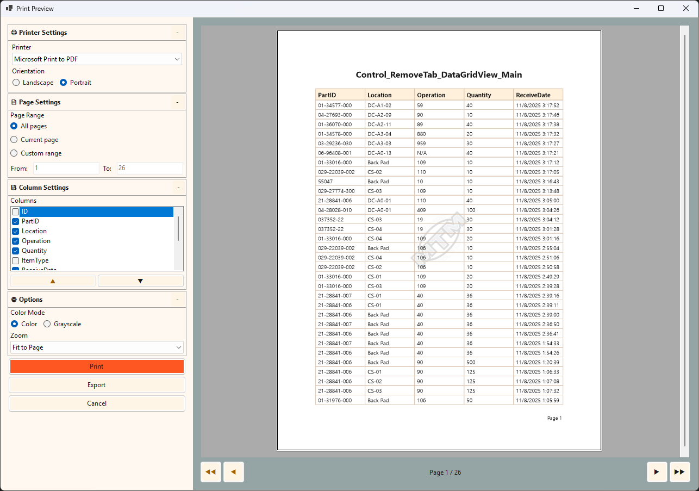
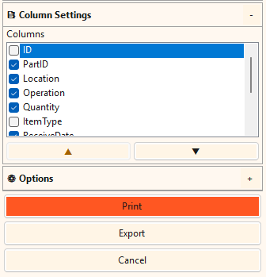
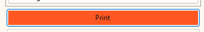
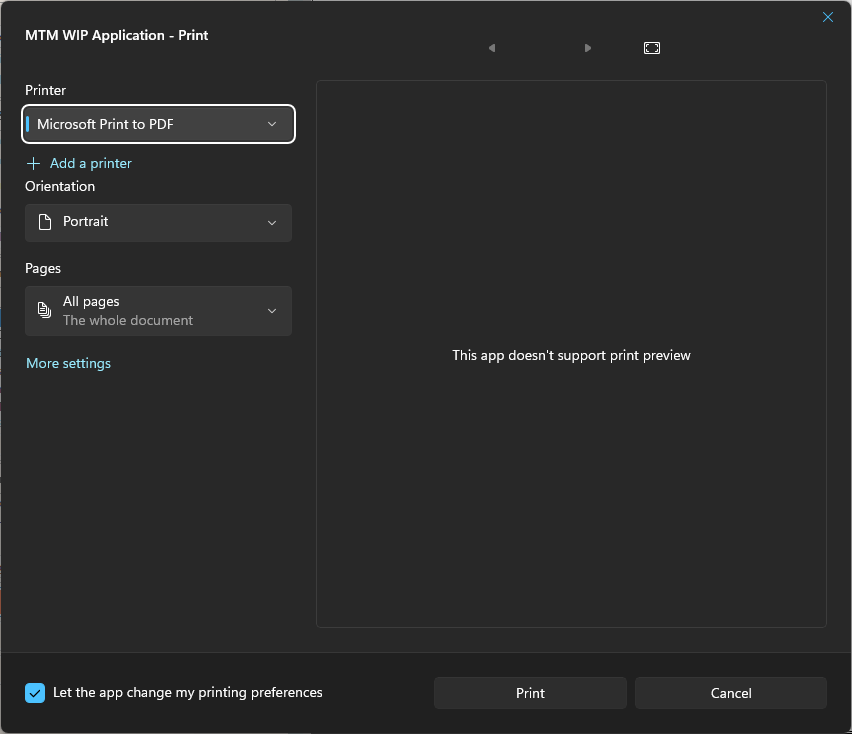
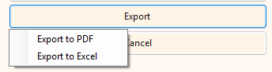
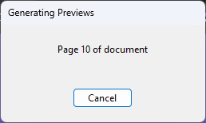

Quick Start: Press Ctrl+P to open the print dialog for any grid view. Right-click any data grid and select "Print..." for quick access.
Print System Overview
🎯 What's New
The MTM print system has been completely redesigned with these key features:
- Accurate Page Ranges - Print exactly the pages you need
- Live Preview - See exactly what will print before printing
- Column Customization - Choose which columns to print and reorder them
- PDF Export - Save reports as PDF files
- Excel Export - Export data to Excel with exact page ranges
- Settings Persistence - Your printer and column preferences are remembered
📋 Where Can I Print?
The print system is available anywhere you see data grids:
- Inventory Tab - Print current inventory views
- Remove Tab - Print removal history
- Transactions Tab - Print transaction history
- Transfer Tab - Print transfer records
Three Ways to Access Print:
| Method |
How To |
Best For |
| Print Button |
Click the Print button on any tab |
Mouse users, obvious access |
| Keyboard Shortcut |
Press Ctrl+P |
Power users, quick access |
| Right-Click Menu |
Right-click grid → Print... |
Context-specific printing |
Print Dialog Layout
🖥️ Understanding the Interface
The print dialog uses a Compact Sidebar layout for maximum preview space:

Print Preview dialog showing the Control_RemoveTab_DataGridView_Main data with settings sidebar on the left (~25% width) and live preview on the right (~75% width). Sidebar contains collapsible sections: Printer Settings (Microsoft Print to PDF selected, Portrait orientation), Page Settings (All pages, Custom range 1 to 26), Column Settings (ID unchecked, other columns checked), and Options (Color mode, Fit to Page zoom). Preview displays "Page 1 / 26" at bottom with navigation arrows.
Layout Components:
- Settings Sidebar (Left ~25%) - Collapsible sections for Printer Settings, Page Settings, Column Settings, and Options
- Preview Pane (Right ~75%) - Live preview of your document with gray background and white page display
- Navigation Bar - Page navigation buttons (◀◀ ◀ ▶ ▶▶) and page counter (Page X / Y) at bottom of preview
- Action Buttons - Print button, Export button, and Cancel button at bottom of sidebar (colors vary by theme)
Step-by-Step: Printing Data
1. 🖨️ Printer Settings
Click the 🖨️ Printer Settings section header to expand printer options:
- Select Printer - Choose from installed printers (your last selection is remembered)
- Orientation - Choose Portrait (tall) or Landscape (wide)
Default Printer: The dialog remembers your last printer selection for each grid. First time usage defaults to your system default printer.
2. 📄 Page Settings
Click the 📄 Page Settings section to configure what pages to print:
| Option |
Description |
Use When |
| All Pages |
Prints the entire document |
You need complete report |
| Current Page |
Prints only the page you're viewing |
Single page verification needed |
| Page Range |
Prints from page X to page Y |
Partial report needed (e.g., pages 5-10) |
Page Range Validation:
- From page must be ≤ To page - Invalid ranges disable Print/Export buttons
- Both values must be ≤ Total Pages - System validates against actual page count
- Visual feedback - Invalid entries show red text
Accuracy Guarantee: Page ranges use actual print system pagination, not row-based estimates. What you see in preview is exactly what will print.
3. 📑 Column Settings
Click the 📑 Column Settings section to customize which columns appear:

Column Settings section expanded showing available columns with checkboxes. In this example, "ID" is unchecked (will not print), while PartID, Location, Operation, Quantity, ItemType, and ReceivedDate are checked (will print). The selected column (PartID highlighted) can be reordered using the up/down arrow buttons (▲ ▼) at the bottom. Options section is collapsed below. Print, Export, and Cancel buttons are visible at the bottom (button colors vary by user theme).
Column Visibility:
- Check/Uncheck columns - Control which columns print
- At least one required - Cannot uncheck all columns
- Preview updates immediately - Changes reflect in preview instantly
- Settings saved - Column selections remembered for next print
Column Reordering:
| Action |
Method |
Result |
| Move Up |
Select column, click ▲ button or press Ctrl+↑ |
Selected column moves up in list (left in print output) |
| Move Down |
Select column, click ▼ button or press Ctrl+↓ |
Selected column moves down in list (right in print output) |
Note: Column order in print dialog controls print output, not the grid display. Grid and print column orders are independent.
4. ⚙️ Options
Click the ⚙️ Options section for additional settings:
- Zoom Level - Control preview magnification (25% to 200%, or Fit to Page)
- Color Mode - Choose between Color or Grayscale printing
| Zoom Option |
Best For |
| Fit to Page |
See entire page (default, recommended) |
| 25% - 200% |
Specific magnification needs |
Not Saved: Orientation, zoom, page range, and color mode are reset each session. Only printer selection and column preferences persist.
5. 👁️ Preview Navigation
Navigate through your document using the controls below the preview:
| Button |
Action |
Keyboard |
| ◀◀ First |
Jump to page 1 |
Home |
| ◀ Previous |
Go back one page |
Page Up |
| Page X / Y |
Shows current page and total |
- |
| Next ▶ |
Advance one page |
Page Down |
| Last ▶▶ |
Jump to final page |
End |
Page Counter Accuracy: The "Page X / Y" counter matches PrintDocument.PageNumber exactly—no estimation or approximation.
6. 🖨️ Print Execution
When you're ready to print:
- Review preview - Verify content, page range, and column selection
- Click Print button - Print button at bottom of sidebar
- Windows Print Dialog appears - Standard Windows print dialog opens for final printer configuration
- Configure final settings - Adjust copies, paper size, or other printer-specific options if needed
- Click Print - In the Windows dialog to send job to printer
- Settings Saved - Your printer and column preferences are saved automatically
- Collect output - Retrieve your printed document from the printer

The Print button located at the bottom of the settings sidebar. Click this button to proceed to the Windows Print dialog where you can configure final print settings and send the job to your printer. Note: Button colors vary based on your selected theme.

Standard Windows Print dialog that appears after clicking the Print button. Your MTM settings (printer, orientation, page range) are automatically transferred to this dialog. You only need to configure additional settings not available in MTM, such as number of copies, paper size, or duplex printing.
Settings Automatically Transferred to Windows Dialog:
- Printer Selection - Your chosen printer from MTM is pre-selected
- Page Orientation - Portrait or Landscape setting is already applied
- Page Range - All Pages, Current Page, or Custom Range (From/To) is pre-configured
Additional Settings Available in Windows Dialog:
- Number of Copies - Print multiple copies of your document
- Paper Size - Change paper size (Letter, Legal, A4, etc.)
- Paper Source - Select which printer tray to use
- Print Quality - Adjust resolution or draft/normal/high quality settings
- Duplex Printing - Enable double-sided printing if your printer supports it
- Collation - Control page ordering for multiple copies
- Printer Properties - Access advanced printer-specific settings
What Happens During Print:
- Validation - Page range and column selection verified before Windows dialog opens
- Windows Dialog Opens - Standard system print dialog for final printer configuration
- Print Job Sent - After clicking Print in Windows dialog, data sent to printer with exact page settings
- Settings Saved - MTM saves your printer selection and column preferences for next time
- Dialog Closes - Print preview dialog closes after successful job submission
Exporting to PDF and Excel
📊 Export Options
Click the Export dropdown button to choose export format:

Export button dropdown menu displaying two options: "Export to PDF" and "Export to Excel". Clicking the Export button reveals this context menu with both export format choices. Cancel button is visible to the right.
| Format |
Best For |
Features |
| PDF |
Sharing reports, archiving, printing later |
Exact page ranges, portable format, print-ready |
| Excel |
Data analysis, spreadsheet work, calculations |
Exact page ranges, editable data, formula support |
📄 Export to PDF
Export your report as a PDF file:
- Configure print settings (page range, columns, orientation)
- Click Export dropdown → Export to PDF
- Choose save location in file dialog
- Enter filename (e.g., "Transaction_Report_2025-11-11.pdf")
- Click Save
- Wait for success message
PDF Export Features:
- Uses "Microsoft Print to PDF" - Built into Windows 10+
- Exact page ranges - Pages 5-10 in preview = pages 5-10 in PDF
- Same settings as print - Orientation, columns match preview exactly
- Print-ready - PDF can be printed later with identical results
Export Guarantee: PDF export contains exactly the same content as preview. No approximation or estimation.
📊 Export to Excel
Export data to Excel spreadsheet format:
- Configure columns and page range
- Click Export dropdown → Export to Excel
- Choose save location in file dialog
- Enter filename (e.g., "Inventory_Data_2025-11-11.xlsx")
- Click Save
- Wait for success message
Excel Export Features:
- Exact page boundaries - Uses print rendering to determine exact rows per page
- Only selected columns - Exports only checked columns in configured order
- Formatted headers - Bold column headers, borders for readability
- Editable data - Full Excel functionality (formulas, sorting, filtering)
Page Range Match: If you export pages 1-3, Excel contains exactly the rows visible on preview pages 1-3. Row counts match exactly.
Progress Monitoring
⏱️ Long-Running Operations
For large datasets, a progress dialog appears during preview generation:

Progress dialog appears during preview generation with the title "Generating Previews" showing current progress ("Page 10 of document" in this example) and a Cancel button to stop the operation. This modal dialog prevents interaction with the main print window until preview generation completes or is cancelled.
Progress Dialog Features:
- Dialog Title - "Generating Previews" (or "Exporting to PDF/Excel" for export operations)
- Progress Message - Shows current page being processed (e.g., "Page 10 of document")
- Modal Overlay - Prevents interaction with print dialog until operation completes
- Cancel Button - Stop operation if taking too long (responds within 500ms)
Cancellation:
- Click Cancel - Operation stops within 500ms
- Dialog closes - Returns to print dialog without changes
- Resources released - Memory and system resources freed
Performance Note: Previews with 100 rows or less generate in under 2 seconds. Larger datasets may take longer (expect ~5-10 seconds for 1000 rows).
Keyboard Shortcuts
⌨️ Complete Shortcut Reference
| Shortcut |
Action |
Context |
| Ctrl+P |
Open print dialog |
Any grid view |
| Ctrl+↑ |
Move column up |
Column settings (when column selected) |
| Ctrl+↓ |
Move column down |
Column settings (when column selected) |
| Home |
First page |
Preview navigation |
| End |
Last page |
Preview navigation |
| Page Up |
Previous page |
Preview navigation |
| Page Down |
Next page |
Preview navigation |
| Esc |
Cancel/Close dialog |
Print dialog |
| Enter |
Print (when Print button focused) |
Print dialog |
Troubleshooting
❌ Common Issues and Solutions
| Problem |
Cause |
Solution |
| "No data to print" |
Empty data grid |
Add data to grid or filter differently |
| Print/Export buttons disabled |
Invalid page range or no columns selected |
Check From ≤ To and at least one column checked |
| "Microsoft Print to PDF" not found |
PDF printer not installed |
Add "Microsoft Print to PDF" in Windows Settings → Printers |
| Export fails with permission denied |
Read-only save location or file locked |
Choose different folder or close file if open |
| Page count seems wrong |
Orientation or columns changed |
Page count recalculates automatically—wait for preview refresh |
| Preview is very slow |
Large dataset (1000+ rows) |
Use Cancel button or filter data before printing |
| Settings not saving |
File permission issue in AppData |
Check %APPDATA%\MTM\PrintSettings\ folder permissions |
| Excel file shows errors when opened |
File already open or Excel version issue |
Close Excel files, use Excel 2016 or newer |
Best Practices
💡 Efficiency Tips
- Filter before printing - Use grid filters to show only needed data
- Use keyboard shortcuts - Ctrl+P for quick access
- Landscape for wide data - More columns fit per page
- PDF for archiving - Use PDF for records and email distribution
- Excel for analysis - Export to Excel when you need to manipulate data
- Page ranges save paper - Print only needed pages (e.g., pages 5-10)
🎯 Quality Tips
- Always preview first - Verify before printing
- Check page count - Ensure all data included
- Customize columns - Show only relevant columns for cleaner output
- Use meaningful filenames - Include date and report type in exports
- Verify page ranges - Double-check From/To values before export
📁 File Organization
- Consistent naming - Use format like "Report_Type_YYYY-MM-DD.pdf"
- Organized folders - Create folders by month or report type
- Backup important exports - Keep copies of critical reports
- Regular cleanup - Archive or delete old exports periodically
📂 Default Export Location:
Exported files are saved to: C:\Users\[YourUsername]\Documents\MTM_Exports
Tip: Copy this path and paste it into Windows Explorer's address bar (replace [YourUsername] with your actual Windows username).
Technical Details
⚙️ System Requirements
- Operating System - Windows 10 or newer
- PDF Export - "Microsoft Print to PDF" printer (included in Windows 10+)
- Excel Export - Excel 2016 or newer to open .xlsx files
- DPI Scaling - Tested at 100%, 125%, 150%, 200% scaling
- Minimum Resolution - 1024x768 (1920x1080 recommended)
💾 Settings Storage
Print preferences are stored in:
%APPDATA%\MTM\PrintSettings\{GridName}.json
What's Saved:
- Per Grid - Each grid (Transactions, Remove, etc.) has separate settings
- Printer Selection - Last used printer name
- Column Visibility - Which columns were checked
- Column Order - How columns were arranged
What's NOT Saved (Resets Each Session):
- Page orientation (Portrait/Landscape)
- Page range selection (All Pages/Current/Custom)
- Zoom level
- Color mode (Color/Grayscale)